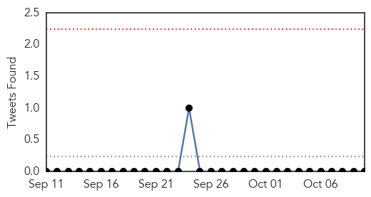
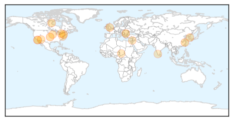

Swine Flu
30-Day Web Trend
4 alerts, 0 warnings

30-Day Twitter Trend
0 alerts, 0 warnings

Article Locations

Article Confidences

Top Articles:
Top Tweets:
-
No tweets found for Oct 10, 2015
Influenza
30-Day Web Trend
5 alerts, 4 warnings
30-Day Twitter Trend
0 alerts, 0 warnings

Article Locations
Article Confidences

Top Articles:
- 0.987
- Switzerland variant influenza strain to cause epidemic this year
- 0.979
- Vaccine Expected To Provide More Protection Than Last Year’s
- 0.947
- CDC issues travel alert for Chinese province after avian flu case confirmed
- 0.892
- St. John XXIII students run for Terry Fox
- 0.869
- Bird Flu Has Midwest Farmers Building Fences, Hosing Down Visitors
- 0.863
- Future flu: ASU experts weigh in on where the annual shot is heading
- 0.861
- Stockpiling two flu drugs 'likely to save lives in a pandemic'
- 0.858
- Nurses Union Wins Battle Over ‘Vaccinate Or Mask’ Policy, Here’s Why
- 0.837
- WHO braces for bird flu spread
- 0.807
- Higher dose flu shot decreases hospitalization of older nursing home residents
- 0.751
- October 10, 2015 Archives
- 0.751
- October 10, 2015 Archives
- 0.751
- October 9, 2015 Archives
- 0.711
- Classical swine fever claims highest number of animals
- 0.704
- Higher-Dose Flu Shot Decreases Hospitalization of Older Nursing Home Residents
- 0.572
- Call for compulsory flu jabs for NHS Highland staff likely to be resisted
- 0.516
- 7 News Belize
Top Tweets:
-
No tweets found for Oct 10, 2015